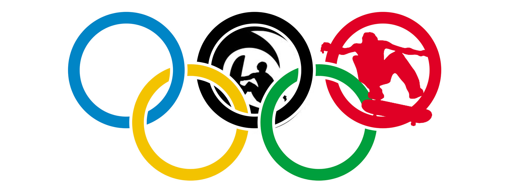

Skateboarding is an Olympic sport
Surfing & Skateboarding Are Officially Anointed As Olympic Sports
Правила проведения соревнований:
- Соревнования проходят в 3 этапа: квалификация, полуфинал и финал. Тем не менее, окончательный формат каждых конкретных соревнований определяется главной судейской коллегией и организаторами соревнований исходя из количества участников. После объявления формата, он не может быть изменен. Отсчёт времени начинается одновременно с попыткой участника исполнить первый трюк программы. Контроль за временем осуществляется судьей-хронометристом. Незадолго до окончания времени участник предупреждается судьей-информатором о скором завершении заезда.
-
Разминка. Всем участникам соревнований на разминку отводится одинаковое количество времени. В случае необходимости устанавливается порядок и очерёдность разминки участников. Если представитель оргкомитета соревнований становится свидетелем нарушения порядка очередности, виновные отстраняются от участия в разминке.
-
Неготовность покрытия. Если, по мнению организаторов или главного судьи соревнований качество покрытия (фигур для катания) не соответствует требованиям безопасности или имеет дефект, оно должно быть заменено или исправлено в самые кратчайшие сроки. На площадке не должно быть посторонних предметов, не должно быть стыков между составными частями площадки.
-
Неготовность (неисправность) личного скейтового оборудования. Ответственность за неисправность личного скейтового оборудования лежит на самом участнике соревнований. Скейтборд должен быть сделан из фанеры. Все составляющие детали скейтборда должны быть надежно закреплены, размеры скейтборда не должны превышать ширина - 23 сантиметра, длинна - 82 сантиметра.
-
Помеха. Если зритель, фотограф, оператор, ведущий, другой участник, неисправность покрытия, оборудования или брошенный предмет мешают участнику, он должен поднять руку. Если главный судья соревнований признает, что помеха не позволила участнику выступить на должном уровне, а сама помеха возникла в первой половине попытки, спортсмену могут разрешить повторить попытку.
-
Пропущенный заезд или попытка В случае пропуска своей попытки или заезда, разрешение о переносе попытки на более позднее время остаётся за главным судьей.
-
Отмена соревнований из-за неблагоприятных погодных условий. Если соревнования проходят под открытым небом, и в случае возникновения неблагоприятных погодных условий (осадки, экстремальная жара, экстремальный холод), главный судья вправе отложить, перенести или отменить соревнований.
Протоколы соревнований
| Информация о спортсмене | Дисциплина | Результат | Место | ||
|---|---|---|---|---|---|
| Фамилия | Имя | Год | |||
| Неверов | Александр | 1998 | Game of S.K.A.T.E. | 10 | 1 |
| Копылов | Алексей | 1992 | Game of S.K.A.T.E. | 7 | 2 |
| Арянов | Владислав | 1997 | Game of S.K.A.T.E. | 6 | 3 |
| Давыдов | Дмитрий | 1996 | Олли-контест (длина) | 350(см) | 1 |
| Гопалков | Максим | 1995 | Олли-контест (длина) | 300(см) | 2 |
| Константинов | Фил | 1994 | Олли-контест (длина) | 300(см) | 3 |
| Неверов | Александр | 1998 | Олли-контест (высота,юниоры) | 65(см) | 1 |
| Зотов | Михаил | 1998 | Олли-контест (высота,юниоры) | 60(см) | 2 |
| Лапшин | Фёдор | 1999 | Олли-контест (высота,юниоры) | 60(см) | 3 |
| Давыдов | Дмитрий | 1996 | Олли-контест (высота) | 90(см) | 1 |
| Агафонов | Сергей | 1995 | Олли-контест (высота) | 85(см) | 2 |
| Константинов | Фил | 1994 | Олли-контест (высота) | 85(см) | 3 |